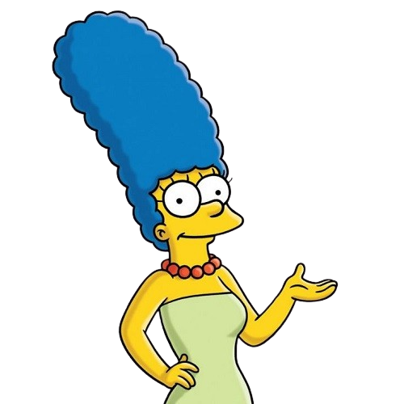
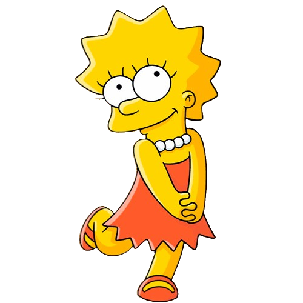

Personagens Principais

Marge Simpson

Lisa Simpson
Os Simpsons é uma série animada que estreou em 1989, criada por Matt Groening. A série é centrada na família Simpson, composta por Homer, Marge, Bart, Lisa e Maggie, e se passa na fictícia Springfield.
Este portfólio foi criado por Caio Vilarouca e explora Os Simpsons, uma série de animação que se tornou um verdadeiro ícone da cultura americana. Desde sua estreia em 1989, Os Simpsons não apenas entreteve milhões, mas também refletiu e satirizou a sociedade, abordando questões contemporâneas com humor ácido e inteligência.

The Simpsons é uma série de animação americana criada por Matt Groening, que estreou em 17 de dezembro de 1989 e rapidamente se tornou um ícone cultural global. Com mais de três décadas no ar, a série não apenas redefiniu o gênero de animação para adultos, mas também se tornou um fenômeno que influenciou a televisão e a cultura pop de várias maneiras.
A concepção de "The Simpsons" surgiu quando Groening foi convidado a criar uma série de curtas animados para o programa "The Tracey Ullman Show". Em vez de desenvolver personagens que já existiam, ele optou por criar uma família fictícia, refletindo uma visão satírica e crítica da vida americana. Os personagens principais—Homer, Marge, Bart, Lisa e Maggie—são baseados em sua própria família, mas cada um deles é exagerado para enfatizar suas características e traços de personalidade, resultando em um humor mordaz e identificável.
Um dos aspectos mais marcantes da série é a escolha da cor amarela para seus personagens. Matt Groening queria uma tonalidade que se destacasse e fosse facilmente reconhecível, de modo que o amarelo vibrante se tornou um símbolo visual da série. Essa escolha estética não apenas atraiu a atenção dos espectadores, mas também ajudou a criar uma identidade única que ainda é associada à série.
Desde o início, houve incertezas sobre o sucesso da série, mas "The Simpsons" rapidamente superou todas as expectativas, tornando-se a série de animação mais longa da história da televisão americana. Ao longo dos anos, a série abordou uma ampla gama de temas, desde questões políticas e sociais até comentários sobre a cultura pop, mantendo-se relevante e provocativa.
O humor ácido e as críticas sociais são fundamentais para o apelo duradouro da série. "The Simpsons" tem uma capacidade notável de se reinventar e comentar sobre questões contemporâneas, como tecnologia, meio ambiente e política, o que permite que a série se conecte com novas gerações de espectadores. Além disso, a riqueza de personagens memoráveis e o desenvolvimento de tramas complexas garantem que cada episódio ofereça algo único, atraindo tanto fãs antigos quanto novos.
Com um legado que abrange prêmios, referências culturais e até mesmo a influência em outros criadores de conteúdo, "The Simpsons" continua a ser uma força poderosa na televisão, provando que a animação pode ser uma forma séria de arte e uma plataforma eficaz para crítica social.